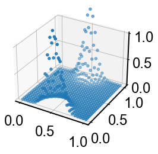
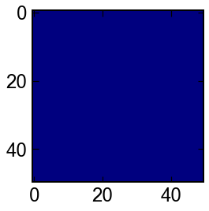
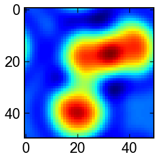

6. 2次元場PDE - 基礎編 -¶
[1]:
import numpy as np
from scipy.integrate import odeint
from matplotlib import pyplot as plt
from scipy.signal import convolve2d
from scipy.integrate import solve_ivp
from mpl_toolkits.mplot3d import Axes3D
6.1. 拡散方程式¶
温度場の二次元拡散方程式を計算してましょう．
\[\partial_t \theta = k(\partial_{xx}+\partial_{yy}) \theta\]
ラプラシアンを計算する時scipy.convolve2dが便利です．“fill”で0境界，“wrap”オプション指定で周期境界，“symm”で勾配なし境界条件が作れます
[2]:
# parameter
N = Nx = Ny = 25
Δ = Δx = Δy = 1./(N-1)
k = 0.01
D = (k/Δ**2)
A = np.array([[0.0, D,0.0],
[D ,-4*D, D],
[0.0, D,0.0],])
# init
x = np.linspace(0.0,1.0,N)
θ = np.zeros((N,N))
θ[0,N//2] = 50
t_span=[0.0,1.0]
t_eval=np.linspace(*t_span,3)
# ODEs
def ODEs(t,θ):
θ = θ.reshape(N,N)
dθ = convolve2d(θ,A,'same','wrap')
return dθ.flatten()
#
sol = solve_ivp(ODEs,t_span,θ.reshape(-1),'RK45',t_eval)
[3]:
x = np.linspace(0.0,1.0,N)
x,y = np.meshgrid(x,x)
for θ in sol.y.T:
θ = θ.reshape(N,N)
fig,ax = plt.subplots(subplot_kw=dict(projection='3d',zlim=(0.0,1.0)))
ax.scatter(x,y,θ)
plt.show()



6.2. Gray-Scott モデル¶
反応拡散方程式のインスタンスの一つです．
\[\begin{split}\partial_t u = D_u (\partial_{xx}+\partial_{yy})u + f(u,v) \\
\partial_t v = D_v (\partial_{xx}+\partial_{yy})u + g(u,v)\end{split}\]
のうち，関数\(f,g\)を
\[\begin{split}f(u,v) = - uv^2 + F(1-u) \\
g(u,v) = + uv^2 - v(F+k)\end{split}\]
と与えたもの．
説明は例えば，こちらの記事をどうぞ． https://qiita.com/kaityo256/items/3c07252ab63591256835 コード中のパラメータも参考にさせていただきました．
[4]:
# parameter
N = Nx = Ny = 40
Δ = Δx = Δy = 1.0
Du = (0.1 /Δ**2)
Dv = (0.05/Δ**2)
F = 0.04
k = 0.06075
A = np.array([[0.0 , Du, 0.0],
[Du ,-4*Du, Du],
[0.0 , Du, 0.0],])
B = np.array([[0.0 , Dv, 0.0],
[Dv ,-4*Dv, Dv],
[0.0 , Dv, 0.0],])
# init
x = np.linspace(0.0,1.0,N)
u = np.zeros((N,N))
v = np.zeros((N,N))
init = ()
h = N//2
u[h-3:h+3, h-3:h+3] = 0.9
v[h-1:h+1, h-1:h+1] = 0.7
t_span=[0.0,3000.0]
t_eval=np.linspace(*t_span,4)
# ODEs
def ODEs(t,U):
u,v = U[:N*N].reshape(N,N),U[N*N:].reshape(N,N)
du = convolve2d(u,A,'same','wrap') - u*v**2 + F*(1.0-u)
dv = convolve2d(v,B,'same','wrap') + u*v**2 - v*(F + k)
return np.hstack([du.flatten(),dv.flatten()])
#
sol = solve_ivp(ODEs,t_span,np.hstack([u.flatten(),v.flatten()]),'RK45',t_eval,rtol=1e-5)
とても面白い模様が見れます. 他の例としてはFitzHugh–Nagumo方程式なども有名．
[5]:
for u in sol.y.T[:,:N*N]:
u = u.reshape(N,N)
fig,ax = plt.subplots(figsize=(4,4))
ax.imshow(u,cmap='Blues')
plt.show()


6.3. BZ反応¶
平衡点周りを振動しつつ，ゆっくりと平衡状態に近づく反応です． モデルはいくつかあるみたいですが，今回は下の参考文献中のモデルを用いました．
\[\begin{split}\epsilon \partial_t x = x(1-x) -fz\frac{x-q}{x+q}+D_x (\partial_{xx}+\partial_{yy})x \\
\partial_t z = x-z + D_z (\partial_{xx}+\partial_{yy}) z\end{split}\]
これは， https://cattech-lab.com/science-tools/bz-reaction/ を参考にさせていただきました．
[6]:
# parameter
N = Nx = Ny = 50
Δ = Δx = Δy = 2.0/(N-1)
Dx = (1.0e-5/Δ**2)
Dz = (1.0e-5/Δ**2)
f = 0.95
ϵ = 0.08
q = 0.075
A = np.array([[0.0 , Dx, 0.0],
[Dx ,-4*Dx, Dx],
[0.0 , Dx, 0.0],])
B = np.array([[0.0 , Dz, 0.0],
[Dz ,-4*Dz, Dz],
[0.0 , Dz, 0.0],])
# init
x = 0.1*np.ones((N,N))
z = 0.1*np.ones((N,N))
z[N//2-6,N//2] *= 1.01
z[N//2-10,N//2+15] *= 1.01
z[N//2+14,N//2-5] *= 1.01
t_span=[0.0,500.0]
t_eval=np.linspace(*t_span,5)
# ODEs
def ODEs(t,X):
x,z = X[:N*N].reshape(N,N),X[N*N:].reshape(N,N)
dx = (x*(1.-x) - f*z*(x-q)/(x+q) + convolve2d(x,A,'same','wrap') )/ϵ
dz = x-z + convolve2d(z,B,'same','wrap')
return np.hstack([dx.flatten(),dz.flatten()])
#
sol = solve_ivp(ODEs,t_span,np.hstack([x.flatten(),z.flatten()]),'RK23',t_eval,rtol=1e-8,atol=1e-6)
[7]:
for u in sol.y.T[:,:N*N]:
u = u.reshape(N,N)
fig,ax = plt.subplots(figsize=(4,4))
ax.imshow(u,cmap='jet')
plt.show()





[ ]: